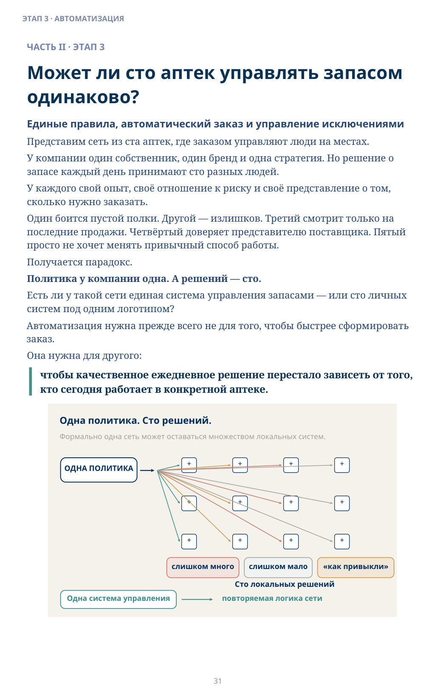
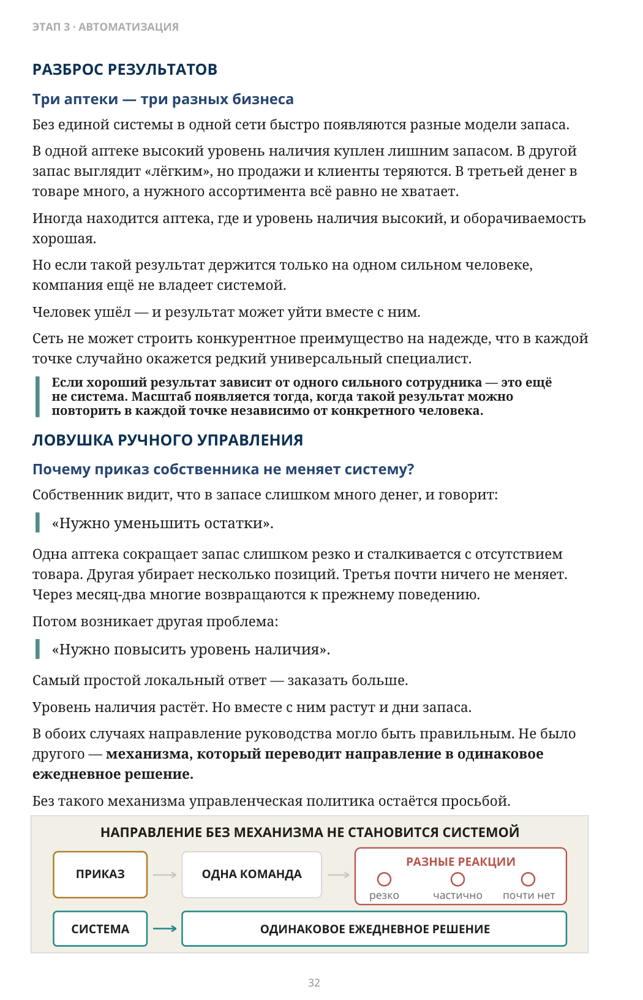
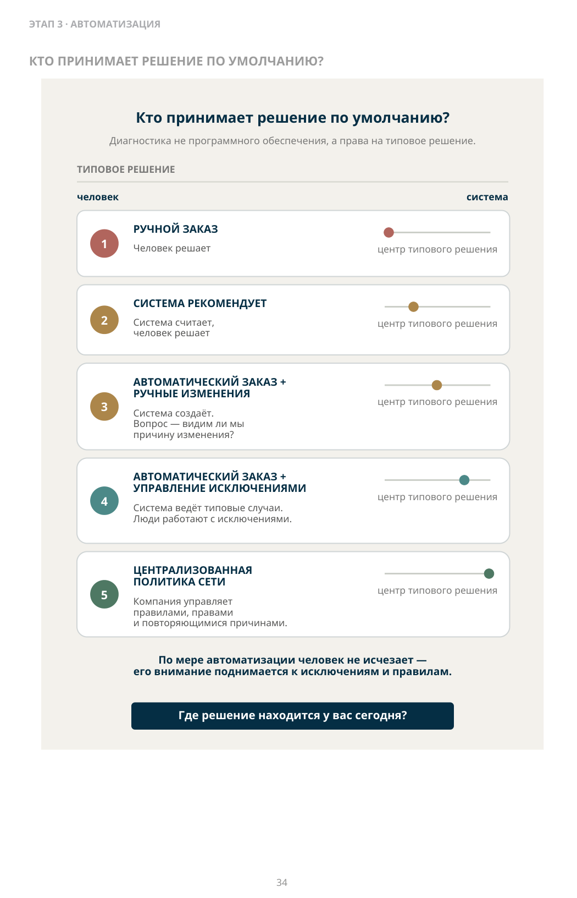
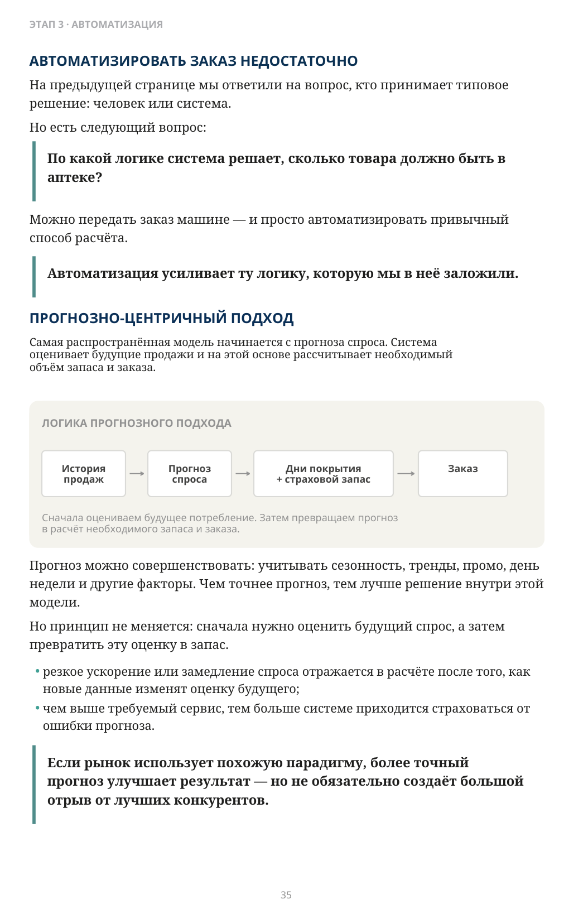
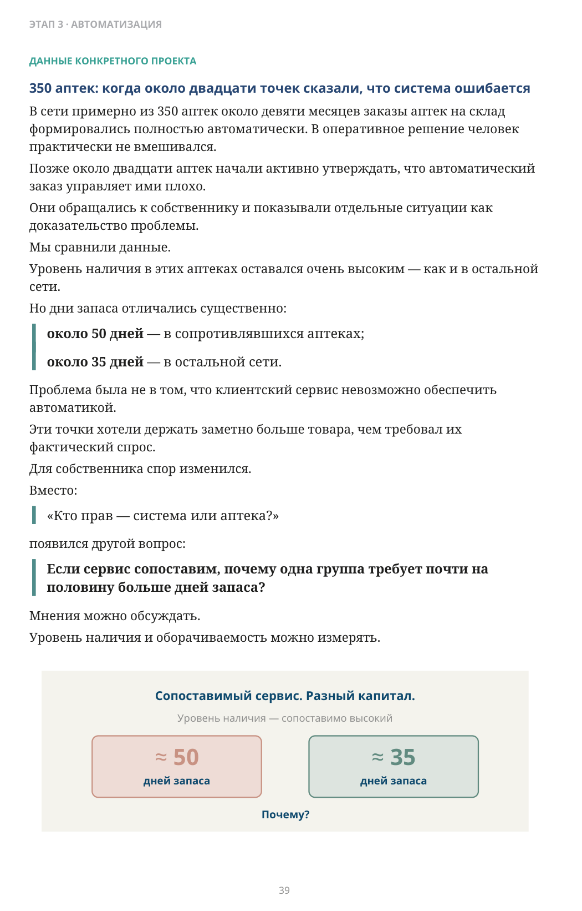
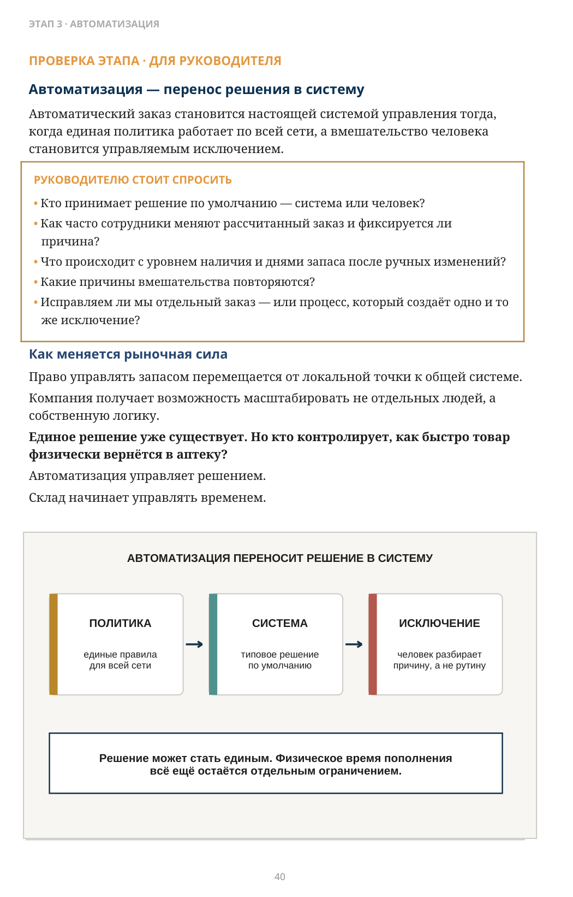

Может ли сто аптек управлять запасом одинаково?
ЧАСТЬ II · ЭТАП 3
Единые правила, автоматический заказ и управление исключениями
Представим сеть из ста аптек, где заказом управляют люди на местах. У компании один собственник, один бренд и одна стратегия. Но решение о запасе каждый день принимают сто разных людей. У каждого свой опыт, своё отношение к риску и своё представление о том, сколько нужно заказать. Один боится пустой полки. Другой — излишков. Третий смотрит только на последние продажи. Четвёртый доверяет представителю поставщика. Пятый просто не хочет менять привычный способ работы. Получается парадокс. Политика у компании одна. А решений — сто. Есть ли у такой сети единая система управления запасами — или сто личных систем под одним логотипом?
Автоматизация нужна прежде всего не для того, чтобы быстрее сформировать заказ. Она нужна для другого:
чтобы качественное ежедневное решение перестало зависеть от того, кто сегодня работает в конкретной аптеке.

Описание схемы
FIG_012: Может ли сто аптек управлять запасом
Одна политика сверху разветвляется в множество локальных решений отдельных аптек, которые дают варианты «слишком много», «слишком мало» и «как привыкли». Внизу показана единая система управления, уменьшающая число локальных способов принятия одного и того же решения.
Три аптеки — три разных бизнеса
Без единой системы в одной сети быстро появляются разные модели запаса.
В одной аптеке высокий уровень наличия куплен лишним запасом. В другой запас выглядит «лёгким», но продажи и клиенты теряются. В третьей денег в товаре много, а нужного ассортимента всё равно не хватает.
Иногда находится аптека, где и уровень наличия высокий, и оборачиваемость хорошая.
Но если такой результат держится только на одном сильном человеке, компания ещё не владеет системой.
Человек ушёл — и результат может уйти вместе с ним.
Сеть не может строить конкурентное преимущество на надежде, что в каждой точке случайно окажется редкий универсальный специалист. Если хороший результат зависит от одного сильного сотрудника — это ещё не система. Масштаб появляется тогда, когда такой результат можно повторить в каждой точке независимо от конкретного человека.
Почему приказ собственника не меняет систему?
Собственник видит, что в запасе слишком много денег, и говорит:
«Нужно уменьшить остатки».
Одна аптека сокращает запас слишком резко и сталкивается с отсутствием товара. Другая убирает несколько позиций. Третья почти ничего не меняет. Через месяц-два многие возвращаются к прежнему поведению.
Потом возникает другая проблема:
«Нужно повысить уровень наличия».
Самый простой локальный ответ — заказать больше.
Уровень наличия растёт. Но вместе с ним растут и дни запаса.
В обоих случаях направление руководства могло быть правильным. Не было другого — механизма, который переводит направление в одинаковое ежедневное решение.
Без такого механизма управленческая политика остаётся просьбой.

Описание схемы
FIG_013: Три аптеки — три разных бизнеса
Слева приказ порождает одну команду и разные реакции исполнителей; справа система задаёт одинаковое ежедневное решение. Смысл — повторяемость достигается механизмом, а не разовыми указаниями.
Можно ли найти идеального провизора для каждой аптеки?
Чтобы вручную хорошо управлять заказом, человек должен одновременно понимать клиента, анализировать спрос и запас, видеть систему, учитывать медленные позиции, ограничения поставок и сохранять дисциплину каждый день.
Если такой специалист действительно есть, нужно ли тратить его внимание на ручной расчёт каждого заказа — или лучше направить его туда, где машина не может принять стандартное решение?
Если результат зависит от редкого человека, компания владеет не системой управления, а удачным исключением.
1 Ручной заказ. Человек сам решает, что и сколько заказать. 2 Система рекомендует. Система считает, человек свободно переписывает. 3 Автоматический заказ + ручные изменения. Система создаёт заказ; важно видеть, кто изменил решение, почему и с каким результатом. 4 Автоматический заказ + управление исключениями. Типовые решения остаются системе, человек вмешивается при реальном исключении. 5 Централизованная политика сети. Компания управляет правилами, правами, параметрами и повторяющимися причинами.
Кто принимает решение по умолчанию — человек или система?
Если сотрудник может без объяснения переписать рассчитанный заказ, рядом с ручным управлением просто появился экран с рекомендацией.
Кто принимает решение по умолчанию?

Описание схемы
FIG_014: Кто принимает решение по умолчанию?
Инфографика «Кто принимает решение по умолчанию?». Сопровождающий текст раздела поясняет её смысл: КТО ПРИНИМАЕТ РЕШЕНИЕ ПО УМОЛЧАНИЮ? Кто принимает решение по умолчанию?
На предыдущей странице мы ответили на вопрос, кто принимает типовое решение: человек или система.
Но есть следующий вопрос:
По какой логике система решает, сколько товара должно быть в аптеке?
Можно передать заказ машине — и просто автоматизировать привычный способ расчёта.
Автоматизация усиливает ту логику, которую мы в неё заложили.
Самая распространённая модель начинается с прогноза спроса. Система оценивает будущие продажи и на этой основе рассчитывает необходимый объём запаса и заказа.
Прогноз можно совершенствовать: учитывать сезонность, тренды, промо, день недели и другие факторы. Чем точнее прогноз, тем лучше решение внутри этой модели.
Но принцип не меняется: сначала нужно оценить будущий спрос, а затем превратить эту оценку в запас.
- резкое ускорение или замедление спроса отражается в расчёте после того, как новые данные изменят оценку будущего;
- чем выше требуемый сервис, тем больше системе приходится страховаться от ошибки прогноза.
Если рынок использует похожую парадигму, более точный прогноз улучшает результат — но не обязательно создаёт большой отрыв от лучших конкурентов.

Описание схемы
FIG_015: Логика прогнозного подхода: история продаж → прогноз спроса → страховой запас → заказ
Последовательность прогнозного подхода: история продаж → прогноз спроса → дни покрытия и страховой запас → заказ. Схема показывает, что заказ формируется после оценки будущей потребности и параметров запаса.
ДРУГАЯ АРХИТЕКТУРА УПРАВЛЕНИЯ ЗАПАСОМ
Прогнозный подход начинает с вопроса: сколько товара мы ожидаем продать?
Управление по состоянию запаса начинает с другого вопроса: адекватен ли текущий запас относительно целевого состояния системы?
Объект управления — состояние запаса. Целевой запас становится реакцией системы на это состояние.
ЛОГИКА АДЕКВАТНОГО ЗАПАСА
Фактический запас → Оценка адекватности → ЦЕЛЕВОЙ ЗАПАС → Заказ
ВЫСОКИЙ ЗАПАС: ЦЕЛЕВОЙ ЗАПАС ↓ — снижать / не пополнять
АДЕКВАТНЫЙ: ЦЕЛЕВОЙ ЗАПАС = — держать в рабочей зоне
НИЗКИЙ ЗАПАС: ЦЕЛЕВОЙ ЗАПАС ↑ — ускорять пополнение
Система не обязана сначала строить прогноз продаж, чтобы понять, надо ли менять целевой запас.
Целевой запас здесь не статичный норматив и не простое «средние продажи × дни». Система меняет его по правилам, когда запас устойчиво оказывается слишком низким или слишком высоким.
- Низкий запас: целевой запас повышается; система быстрее реагирует на фактическое истощение.
- Адекватный запас: целевой запас стабилен; пополнение идёт в штатном режиме.
- Высокий запас: целевой запас снижается или пополнение ограничивается, пока запас не вернётся в рабочую зону.
Это не отменяет прогноз как инструмент бюджета, закупочного планирования или промо. Но для ежедневного пополнения это другая система управления.
На практике эти архитектуры могут сочетаться: прогнозная система тоже учитывает состояние запаса, а управление по состоянию может использовать оценку будущего спроса. Различие — в основном управляющем сигнале: ожидаемый спрос или отклонение фактического состояния от требуемого.
Этот принцип реализован в Horizon by Gutsaga Technology. В конкретных проектах уровень наличия поднимался выше 99% — в отдельных случаях примерно до 99,5% — при постоянном контроле дней запаса. Это результаты конкретных внедрений, а не универсальная гарантия.
Конкурентное преимущество иногда создаётся не только точностью прогноза, а другой архитектурой обратной связи.
Есть опасная иллюзия:
если заказ делает машина, людям больше не нужно думать.
На практике зрелая автоматизация делает обратное.
Она убирает тысячи повторяющихся решений, чтобы люди могли заниматься тем, где требуется мышление:
- почему возникло исключение;
- почему один поставщик систематически создаёт проблему;
- почему одна аптека отличается от остальных;
- почему система постоянно требует ручной коррекции одного и того же типа;
- нужно ли изменить параметр, процесс или саму политику.
Автоматизация должна убрать повторяющиеся решения, а не управленческое мышление.
Типовой заказ — задача системы.
Повторяющаяся причина исключений — задача управления.
Автоматизация — это не кнопка заказа
Настоящая автоматизация переносит в систему правила компании.
Руководство может изменить политику один раз — и увидеть её исполнение во всех аптеках, где эти правила должны действовать.
Локальный сотрудник выполняет задачи, в которых особенно важен человек:
- работать с пациентом;
- замечать реальное исключение;
- объяснять причину;
- сообщать о локальном событии.
А рутинное решение по тысячам сочетаний:
товарная позиция × аптека × день
принимается по единой логике.
Машина исполняет повторяемое. Люди управляют причинами, параметрами и исключениями.
В этот момент контроль начинает перемещаться от отдельных аптек к системе управления сетью.
Почему автоматический заказ иногда воспринимают как угрозу?
Ручной заказ — это не только работа.
Это ещё и право решать, какой товар попадёт в аптеку и в каком количестве.
Автоматизация меняет это право.
В некоторых компаниях на локальные решения влияют:
- представители поставщиков;
- промо-программы;
- привычные отношения;
- локальные договорённости;
- личные стимулы.
Но даже без финансовой мотивации человек может защищать привычную автономию и не любить систему, которая делает его решения видимыми.
Поэтому сопротивление не доказывает, что алгоритм плохой.
Иногда оно показывает, что кто-то теряет возможность влиять на запас по собственному усмотрению.
И здесь мнения нужно переводить в измеряемый вопрос:
Что произошло с уровнем наличия и днями запаса?
350 аптек: когда около двадцати точек сказали, что система ошибается
В сети примерно из 350 аптек около девяти месяцев заказы аптек на склад формировались полностью автоматически. В оперативное решение человек практически не вмешивался. Позже около двадцати аптек начали активно утверждать, что автоматический заказ управляет ими плохо. Они обращались к собственнику и показывали отдельные ситуации как доказательство проблемы. Мы сравнили данные. Уровень наличия в этих аптеках оставался очень высоким — как и в остальной сети. Но дни запаса отличались существенно:
около 50 дней — в сопротивлявшихся аптеках;
около 35 дней — в остальной сети.
Проблема была не в том, что клиентский сервис невозможно обеспечить автоматикой. Эти точки хотели держать заметно больше товара, чем требовал их фактический спрос. Для собственника спор изменился. Вместо:
«Кто прав — система или аптека?»
появился другой вопрос:
Если сервис сопоставим, почему одна группа требует почти на половину больше дней запаса?
Мнения можно обсуждать. Уровень наличия и оборачиваемость можно измерять.

Описание схемы
FIG_017: 350 аптек: когда около двадцати точек сказали, что система ошибается
Сравнение двух состояний сопоставимого сервиса показывает примерно 50 дней запаса в одной модели и примерно 35 дней в другой. Смысл — одинаковый уровень сервиса может требовать разного объёма капитала.
Автоматизация — перенос решения в систему
Автоматический заказ становится настоящей системой управления тогда, когда единая политика работает по всей сети, а вмешательство человека становится управляемым исключением.
- Кто принимает решение по умолчанию — система или человек?
- Как часто сотрудники меняют рассчитанный заказ и фиксируется ли причина?
- Что происходит с уровнем наличия и днями запаса после ручных изменений?
- Какие причины вмешательства повторяются?
- Исправляем ли мы отдельный заказ — или процесс, который создаёт одно и то же исключение?
Как меняется рыночная сила
Право управлять запасом перемещается от локальной точки к общей системе. Компания получает возможность масштабировать не отдельных людей, а собственную логику. Единое решение уже существует. Но кто контролирует, как быстро товар физически вернётся в аптеку? Автоматизация управляет решением. Склад начинает управлять временем.

Описание схемы
FIG_018: Автоматизация — перенос решения в систему
Три блока «политика → система → исключение»: единые правила переносятся в систему, типовое решение выполняется автоматически, а человек разбирает исключения. Это перенос повторяемого решения из ручного труда в механизм управления.